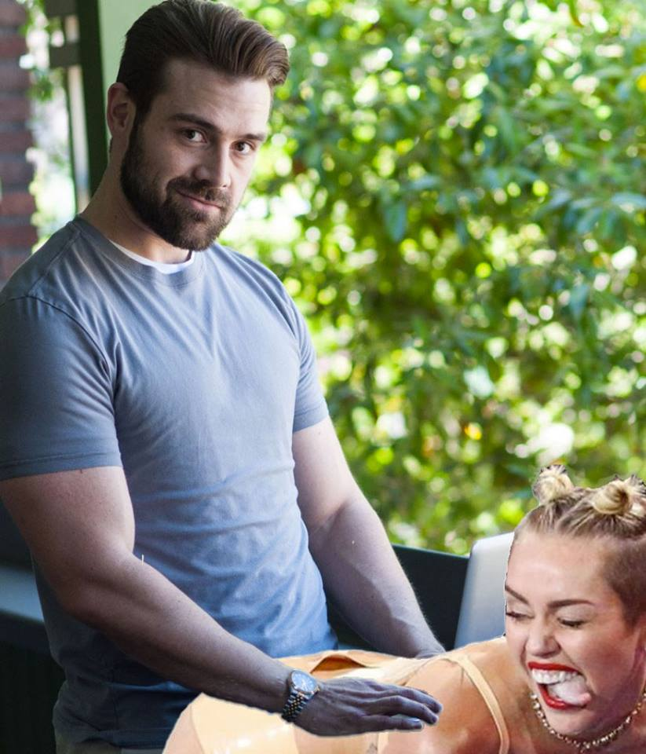

About Me
My name is Gabriel Chavez, but you can call me Gabe. I was born and raised in Tucson, Arizona and graduated from the University of Arizona with a bachelors of science in marketing. After graduation, I started working for a digital marketing firm in the downtown area. I learned a great deal about standard marketing practices, and I was also exposed to the thriving start-up and tech community. It was there that I realized that I was more interested in the web development side of the firm rather than the marketing side.
I try to maintain a healthy lifestyle when I'm not working on development. I workout at least four times a week, but I also love to eat so really I'm just balancing everything out. I enjoy playing video games with my friends, both on PC and PS4. My current favorite game is Divinity: Original Sin 2.